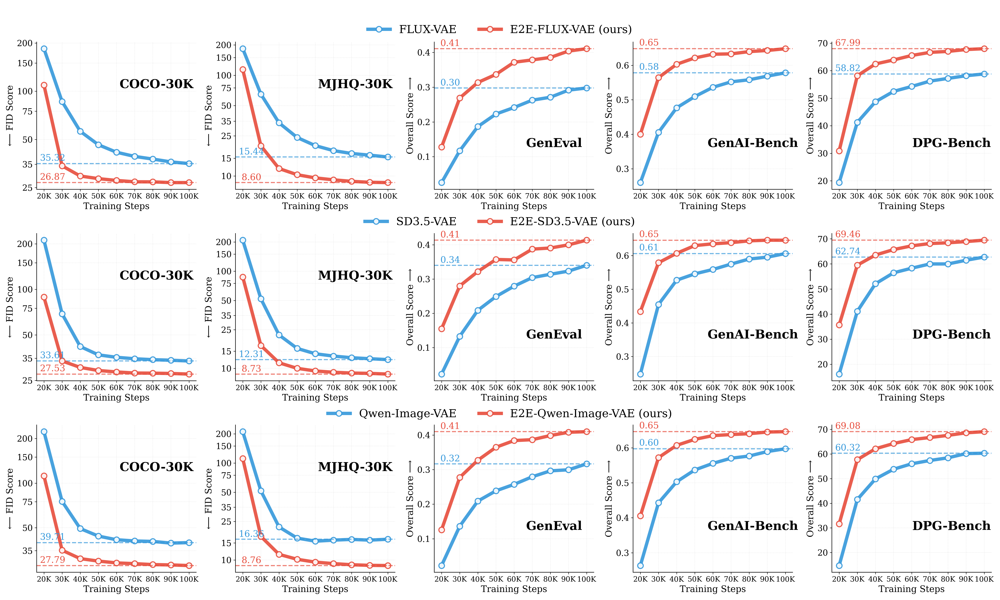
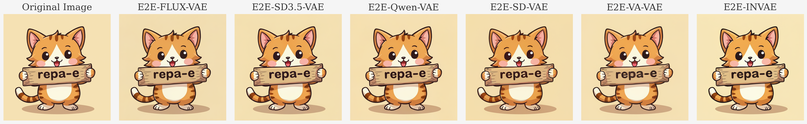
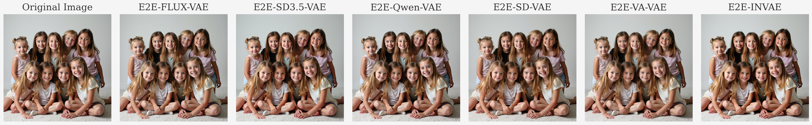

Family of end-to-end tuned VAEs for supercharging T2I diffusion transformers
We present REPA-E for T2I, a family of End-to-End Tuned VAEs for supercharging text-to-image generation training.
End-to-end VAEs show superior performance over their original counterparts across all benchmarks (COCO30k, DPG-Bench, GenAI-Bench, GenEval, MJHQ30k) without need for any additional representation alignment losses.
Better T2I Performance: Consistent improvements over baseline VAEs across all benchmarks (COCO30k, DPG-Bench, GenAI-Bench, GenEval, MJHQ30k) with end-to-end tuned VAEs.
Family of End-to-End Tuned VAEs: We release a family of end-to-end tuned VAEs across different families (FLUX-VAE, SD3.5-VAE, Qwen-Image-VAE) for supercharging text-to-image generation training.
Better Latent Space Structure: End-to-end tuned VAEs show better latent space structure compared to their original counterparts which are mostly optimized for reconstruction.
We present REPA-E for T2I, a family of End-to-End Tuned VAEs for supercharging text-to-image generation training.
End-to-end VAEs show superior performance across all benchmarks (COCO30k, DPG-Bench, GenAI-Bench, GenEval, MJHQ30k) without need for any additional representation alignment losses!
§Better T2I Performance: End-to-End tuned VAEs lead to better T2I generation without need for any additional representation alignment losses!
§Improved Latent Space Structure: End-to-End tuned VAEs show improved semantic spatial structure and details over traditionally used VAEs like FLUX-VAE, SD3.5-VAE, Qwen-Image-VAE etc.
§SOTA performance on Imagenet: End-to-End tuned VAEs achieve new state-of-the-art performance on ImageNet 256×256 achieving gFID 1.12 with classifer-free guidance.
We perform end-to-end tuning on ImageNet 256×256 to obtain end-to-end tuned encoders for popular VAE families like FLUX-VAE, SD-3.5-VAE, Qwen-Image-VAE.
We then compare the performance of obtained end-to-end tuned VAEs with the standard VAEs (e.g, Flux-VAE) for text-to-image (T2I) generation tasks.
End-to-End VAE Tuning on ImageNet 256×256. We follow the same training recipe as the original REPA-E paper, for end-to-end tuning on ImageNet 256×256.
We use a small learning rate of 2×10-5, AdamW optimizer and 80 epochs for end-to-end tuning across all VAE families (FLUX-VAE, SD-3.5-VAE, Qwen-Image-VAE). We next refer the corresponding finetuned VAEs as E2E-FLUX-VAE, E2E-SD-3.5-VAE, E2E-Qwen-Image-VAE respectively.
End-to-End Tuning Configuration for VAE:
VAE Models: FLUX-VAE, SD-3.5-VAE, Qwen-Image-VAE
Dataset: ImageNet-256
Training epochs: 80 epochs
Learning rate: 2×10-5
T2I Training Setup. For our diffusion backbone, we follow the setup in Fuse-DiT and adopt a variant of the DiT-3B architecture with a self-attention-based text conditioning mechanism.
We use Gemma-2B to encode text prompts into contextual embeddings.
For training we use the BLIP-3o pretraining dataset (~28M samples) for T2I training with both original and end-to-end tuned VAEs. We perform experiments at both 256×256 and 512×512 resolutions. Unless otherwise specified, we use 25 sampling steps with a guidance scale of 6.5 for inference.
T2I Training Configuration:
Dataset: BLIP-3o (~28M samples)
Resolution: 256×256, 512×512
Batch size: 1024 (256×256), 448 (512×512)
Learning rate: Constant 1×10-4
Optimizer: AdamW
EMA: Decay 0.9999, per-step update
We next evaluate the performance of end-to-end tuned VAEs on various text-to-image generation benchmarks.
Quantitative Results: T2I Performance
We evaluate End-to-End Tuned VAEs across multiple benchmarks and training scenarios, demonstrating consistent improvements over baseline VAEs.
End-to-end tuned VAEs show faster convergence and better final performance across all metrics.
End-to-End VAEs Leads to Accelerated T2I Training
We compare training with original VAEs (FLUX-VAE, SD-3.5-VAE, Qwen-Image-VAE) against their end-to-end tuned counterparts across multiple evaluation benchmarks.
End-to-End Tuned VAEs consistently achieve better performance across all metrics, with improvements particularly pronounced on vision-centric benchmarks like MJHQ-30K and GenEval.

Training convergence at 100K steps.
Comparison of baseline VAEs vs End-to-End Tuned VAEs across three VAE families (FLUX-VAE, SD3.5-VAE, Qwen-Image-VAE) and five benchmarks: COCO30k FID, DPG-Bench, GenAI-Bench, GenEval, and MJHQ30k.
End-to-end tuned VAEs show consistent improvements across all metrics and VAE architectures.
Training convergence (500K steps).
Extended training confirms sustained improvements across all benchmarks with End-to-End Tuned VAEs.
Finding 1: End-to-End VAEs tuned on just "ImageNet 256×256" generalize to T2I; leading to better training performance across various text-to-image generation benchmarks.
Comparison with REPA Representation Alignment
To understand the effectiveness of end-to-end tuning, we compare three approaches at 100K training steps:
(1) FLUX-VAE baseline without modifications,
(2) FLUX-VAE with REPA representation alignment losses added during T2I training, and
(3) E2E-FLUX-VAE (ours) with end-to-end tuning but without additional alignment losses.
The results demonstrate that end-to-end tuning outperforms both the baseline and REPA-enhanced approaches across all benchmarks, achieving superior performance without requiring auxiliary alignment objectives.
Performance comparison at 100K steps: E2E-FLUX-VAE vs REPA alignment.
Bar chart comparing three approaches across five benchmarks.
E2E-FLUX-VAE (red) outperforms both FLUX-VAE baseline (blue) and FLUX-VAE+REPA with representation alignment (orange), demonstrating that end-to-end tuned VAEs lead to better T2I generation without need for any additional representation alignment losses.
Finding 2: End-to-End VAEs lead to faster T2I training over baseline REPA without need for any additional representation alignment losses.
End-to-End VAEs Generalize to Higher Resolutions
We also analyze the generalization of end-to-end tuned VAEs to higher resolutions. We resume training from the 500K checkpoint trained at 256×256 resolution and train for an additional 200K steps at 512×512 resolution with batch size 448.
We observe that despite being trained at 256×256 resolution on ImageNet,
end-to-end tuned VAEs continue to outperform the original VAEs across all benchmarks even when trained at 512×512 resolution for T2I generation.
High-resolution training (512px, 200K steps) - Final performance.
Bar chart showing final performance comparison between FLUX-VAE and E2E-FLUX-VAE after 200K additional steps at 512×512 resolution.
Performance improvements persist when resuming training at higher resolution, demonstrating that E2E-tuned VAEs generalize effectively across resolutions.
Finding 3: End-to-End VAEs tuned on ImageNet 256×256 generalize for better T2I generation across different resolutions (256×256, 512×512).
Qualitative Comparisons
For qualitative visualization, we use the 200K-step checkpoint trained at 512×512 resolution.
All images are generated with 25 sampling steps and a guidance scale of 6.5.
Beyond quantitative metrics, End-to-End Tuned VAEs produce visually superior results compared to baseline FLUX-VAE.
The generated images show improved detail, better prompt adherence, and more coherent compositions.
Below we show comparisons for T2I generations using models trained with FLUX-VAE and E2E-Tuned FLUX-VAE (Ours).
Image 1 / 8
Qualitative comparison samples (200K steps, 512px resolution).
Models trained with End-to-End Tuned VAEs show improved quality and prompt adherence across diverse prompts compared to FLUX-VAE.
Click images to zoom for detail inspection.
Impact of End-to-End Tuning on VAE Reconstruction Quality
We also analyze the impact of end-to-end tuning on VAE reconstruction quality.
Notably, despite being only tuned on ImageNet 256×256, end-to-end tuned VAEs show improved generation quality while maintaining reconstruction fidelity across challenging scenes with multiple faces, subjects and text.


Reconstruction results across all E2E-tuned VAEs.
End-to-End Tuned VAEs show improved generation quality while maintaining reconstruction fidelity across challenging scenes with multiple faces, subjects and text.
Click images to zoom for detail inspection.
Finding 4: End-to-End VAEs despite being only tuned on ImageNet 256×256 improve generation performance while maintaining reconstruction fidelity across challenging scenes with multiple faces, subjects and text.
End-to-End Tuned VAEs Lead to Better Latent Space Structure
To understand what makes End-to-End Tuned VAEs effective, we analyze the learned latent representations through PCA projections and spatial similarity analysis.
These visualizations reveal how end-to-end tuning shapes the VAE's latent space to better support high-quality generation.
Notably, end-to-end tuning enriches the VAE latent space by incorporating more structural and semantic information over traditional VAEs (Flux-VAE, SDVAE) trained for reconstruction alone. Please also refer the original REPA-E paper for more details.
PCA Projections of VAE Latents
We project VAE latent representations to 2D using PCA and visualize them as RGB images (first 3 principal components).
This reveals the spatial structure and semantic organization learned by different VAE architectures.
As illustrated in the PCA visualizations, end-to-end training injects additional structural and semantic information into the latent representations.
PCA projection visualization.
Comparison of latent space structure between baseline FLUX-VAE and E2E-Tuned Flux-VAE.
Colors represent the first 3 principal components depicted as RGB for visualization. We observe that E2E tuned Flux-VAE shows more semantic and structural information in the latent space compared to baseline FLUX-VAE.
Spatial Self-Similarity Analysis
We also analyze the cosine similarity between patch tokens in the latent space to measure spatial structure.
End-to-End Tuned VAEs show more coherent spatial patterns, indicating better capture of local and global image structure.
As shown in the similarity maps, end-to-end tuning embeds more meaningful structural and semantic relationships between patches, making the latent space more informative for the diffusion model to generate high-quality images.
Finding 5: End-to-End tuned VAEs show improved semantic spatial structure and details over FLUX-VAE, as evidenced by PCA projections and spatial self-similarity analysis.
ImageNet Generalization
Finally, we show that the end-to-end tuned VAEs can also be used for traditional image generation benchmarks like ImageNet 256x256.
We observe that the end-to-end tuned VAEs achieve significantly better FID scores (better generation quality) compared to their original counterparts across all VAE families (FLUX, SD3.5, Qwen).
ImageNet Results.
Comparison of Standard VAE vs E2E-tuned VAE across FLUX, Qwen, and SD3.5 architectures.
End-to-end tuned VAEs achieve significantly better gFID scores.
Limitations and Future Work
In this work, we show how end-to-end tuned VAEs lead to better T2I training over more standard VAEs like Flux-VAE and SDVAE which primarily trained for reconstruction alone.
This primarily happens because end-to-end tuned VAEs lead to better semantic representations while maintaining strong reconstruction fidelity.
In future, we are actively studying the impact of end-to-end tuned VAEs for other downstream tasks which are also reliant on both the semantic and reconstrcution ability of the VAE latents. Examples include Image-to-Image Translation, Image-editing, Image inpainitng etc.
Conclusion
We present REPA-E for T2I, a family of End-to-End Tuned VAEs for supercharging text-to-image generation training.
End-to-end VAEs show superior performance over their original counterparts across all benchmarks (COCO30k, DPG-Bench, GenAI-Bench, GenEval, MJHQ30k) without need for any additional representation alignment losses.
We hope REPA-E for T2I will inspire further research into end-to-end training strategies for generative models and the co-design of
VAE/RAE architectures with diffusion transformers.
Team
This work is a joint collaboration between the REPA-E team and Canva.
@article{leng2025repae,
title={{REPA-E: Unlocking VAE for End-to-End Tuning with Latent Diffusion Transformers}},
author={Leng, Xingjian and Singh, Jaskirat and Hou, Yunzhong and Xing, Zhenchang and Xie, Saining and Zheng, Liang},
journal={arXiv preprint arXiv:2504.10483},
year={2025}
}